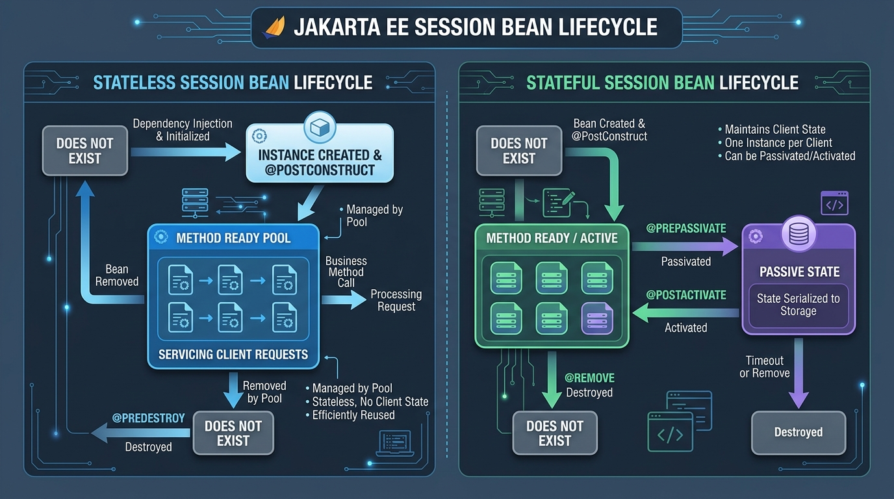

<title>Session 1 &amp; 2 — Introduction to Jakarta EJB &amp; Session Bean Types</title>
<meta name="viewport" content="width=device-width, initial-scale=1">
<meta name="description" content="Sessions 1 & 2: Overview of Jakarta Enterprise Beans, what an enterprise bean is, why EJBs are needed, session bean types (stateful, stateless, singleton), entity beans, and message-driven beans.">
<link rel="stylesheet" href="assets/css/styles.css">
<script>window.PAGE = "s01-02";</script>

<main class="page">

  <h1>Session 1 &amp; 2 · Introduction to Jakarta Enterprise Beans &amp; Session Bean Types</h1>
  <p class="lede">These two sessions cover the <strong>big picture</strong> of Jakarta Enterprise Beans —
    what they are, why they exist, the different bean types (stateful, stateless, singleton), entity
    beans, and message-driven beans. By the end you'll know which bean to reach for in any scenario.</p>

  <div class="callout callout--key"><span class="callout__i">🎯</span>
    <div class="callout__b"><b>Learning Objectives (from the Presenter's Manual)</b>
      <ol style="margin:.6rem 0 0;padding-left:1.2rem">
        <li>Discuss an overview of Jakarta Enterprise Beans</li>
        <li>Describe what an enterprise bean is and its essential characteristics</li>
        <li>Explain the necessity for enterprise beans</li>
        <li>Elaborate the types of session beans: stateful, stateless, and singleton</li>
        <li>Distinguish between stateful, stateless, and singleton sessions</li>
        <li>Describe entity beans</li>
        <li>Explain message-driven beans</li>
        <li>Explain message-driven controlled delivery: delivery active and delivery groups</li>
      </ol>
    </div>
  </div>

  <!-- =====================================================================
       SESSION 1 — Introduction to Jakarta Enterprise Beans
       ===================================================================== -->

  <span class="eyebrow">session 1</span>
  <h2>Part 1 · Introduction to Jakarta Enterprise Beans</h2>

  <h3>1.1 The problem EJB solves</h3>
  <p>Imagine you run a shop alone: you greet customers, take payments, track stock, do the taxes, lock
    up at night. Fine for 10 customers a day. At 10,000 a day it collapses — you can't personally
    verify every payment or hold 50 conversations at once.</p>
  <p>A plain Java program hits the same wall. One codebase ends up doing security checks, database
    transactions, thread-safety, connection management <em>and</em> the actual business rules —
    tangled together, impossible to maintain.</p>
  <p><strong>Jakarta Enterprise Beans (EJB)</strong> splits those apart. You write only the business
    rules. The application server provides the rest as services you switch on with annotations.</p>

  <div class="callout callout--key"><span class="callout__i">✦</span>
    <div class="callout__b"><b>Definition</b>
      Jakarta Enterprise Beans (EJB) is a <strong>server-side software component</strong> that
      contains the <strong>business logic</strong> of an enterprise application. It runs inside an
      <strong>EJB Container</strong> on an application server (like WildFly), which automatically
      provides services like security, transaction management, and concurrency control.</div>
  </div>

  <h3>1.2 Without EJB vs with EJB — the same method</h3>
  <p>A bank transfer, done the hard way:</p>
  <pre><code>public class BankService {
    public void transferFunds(int from, int to, double amount) {
        Connection conn = getConnection();
        conn.setAutoCommit(false);                       // start a transaction by hand
        if (!currentUser.hasRole("TELLER"))              // check security by hand
            throw new SecurityException("Access denied");
        synchronized (this) {                            // manage threads by hand
            try {
                debit(from, amount, conn);
                credit(to, amount, conn);
                conn.commit();                           // commit by hand
            } catch (Exception e) {
                conn.rollback();                         // undo by hand
            }
        }
    }
}</code></pre>
  <p>The same method as a Jakarta EE bean:</p>
  <pre><code>@Stateless
@RolesAllowed("TELLER")                 // security: the container enforces it
public class BankService {

    @TransactionAttribute(REQUIRED)     // transaction: the container starts &amp; commits it
    public void transferFunds(int from, int to, double amount) {
        debit(from, amount);
        credit(to, amount);
        // exception thrown? container rolls back automatically.
        // concurrency? container handles it.
    }
}</code></pre>
  <div class="callout callout--key"><span class="callout__i">✦</span>
    <div class="callout__b"><b>This is the whole idea</b>
      Same business logic. All the plumbing became annotations. That trade — write plain code, declare
      what you need — is Jakarta EE in one sentence.</div>
  </div>

  <h3>1.3 Key terms: server, container, bean</h3>
  <div class="tablewrap"><table>
    <thead><tr><th>Term</th><th>Plain meaning</th></tr></thead>
    <tbody>
      <tr><td><strong>Application server</strong> (WildFly)</td><td>A large program you run that already contains all the Jakarta EE machinery. You drop your app into it.</td></tr>
      <tr><td><strong>Container</strong></td><td>The part of the server that <em>manages your objects</em>: it creates them, pools them, injects their dependencies, wraps them with security/transactions, and destroys them. There's a "web container" for servlets/JSF and an "EJB container" for enterprise beans.</td></tr>
      <tr><td><strong>Bean</strong></td><td>Any class the container manages for you. An <em>enterprise bean</em> is one carrying EJB annotations (<code>@Stateless</code>, <code>@Stateful</code>, <code>@Singleton</code>, <code>@MessageDriven</code>).</td></tr>
      <tr><td><strong>Deploy</strong></td><td>Hand your built <code>.war</code>/<code>.ear</code> file to the server so it starts running it.</td></tr>
    </tbody>
  </table></div>

  <h3>1.4 The three-tier architecture</h3>
  <div class="tablewrap"><table>
    <thead><tr><th>Tier</th><th>Runs where</th><th>Contains</th><th>Talks to</th></tr></thead>
    <tbody>
      <tr><td><strong>Client tier</strong></td><td>The user's device</td><td>Web browser, mobile app, desktop app</td><td>Sends HTTP / REST requests to the server</td></tr>
      <tr><td><strong>Web container</strong></td><td>In the app server</td><td>Servlets, Jakarta Faces (JSF) pages</td><td>Calls enterprise beans</td></tr>
      <tr><td><strong>EJB container</strong></td><td>In the app server</td><td>Session beans, message-driven beans (your business logic)</td><td>Reads/writes the database via JPA/JDBC</td></tr>
      <tr><td><strong>Data tier</strong></td><td>A database server</td><td>PostgreSQL, other systems (ERP/CRM)</td><td>—</td></tr>
    </tbody>
  </table></div>
  <p>The container gives beans these for free: <strong>transactions, security, concurrency control,
    connection pooling, lifecycle management, remote access</strong>. Every one of those is a session
    later in this course.</p>

  <h3>1.5 What is an enterprise bean?</h3>
  <p>An Enterprise Bean is a Java class that:</p>
  <ul>
    <li>Is written using standard Java</li>
    <li>Is annotated with EJB annotations (e.g., <code>@Stateless</code>, <code>@Stateful</code>, <code>@Singleton</code>)</li>
    <li>Is deployed inside an EJB container on an application server</li>
    <li>Contains the business logic of your application</li>
  </ul>

  <details>
    <summary><strong>📦 Deep dive: How enterprise beans are packaged</strong></summary>
    <div class="tablewrap"><table>
      <thead><tr><th>Package Type</th><th>Extension</th><th>Contents</th></tr></thead>
      <tbody>
        <tr><td><strong>JAR</strong> (standalone)</td><td><code>.jar</code></td><td>Just your EJB classes</td></tr>
        <tr><td><strong>EAR</strong> (Enterprise Archive)</td><td><code>.ear</code></td><td>Contains <code>.jar</code> + <code>.war</code> + shared libs — most common in production</td></tr>
        <tr><td><strong>WAR</strong> (embedded)</td><td><code>.war</code></td><td>Web archive with EJBs inside <code>WEB-INF/classes/</code></td></tr>
      </tbody>
    </table></div>
    <div class="callout callout--analogy"><span class="callout__i">🍫</span>
      <div class="callout__b"><b>Analogy</b>
        A JAR is a box of chocolates. A WAR is a gift bag. An EAR is a shipping crate that holds
        multiple bags and boxes together.</div>
    </div>
  </details>

  <details>
    <summary><strong>📋 Deep dive: Essential characteristics of enterprise beans</strong></summary>
    <div class="tablewrap"><table>
      <thead><tr><th>Characteristic</th><th>What it means</th></tr></thead>
      <tbody>
        <tr><td><strong>Business Logic</strong></td><td>The bean handles operations like <code>processLoanApplication()</code>, <code>transferFunds()</code>. It does NOT handle UI or connection pooling.</td></tr>
        <tr><td><strong>Container Management</strong></td><td>You never create a bean with <code>new MyBean()</code>. The container creates, manages, pools, and destroys instances.</td></tr>
        <tr><td><strong>Customizable at Deployment</strong></td><td>Configure behaviour differently per environment (Dev, Test, Prod) without changing source code.</td></tr>
        <tr><td><strong>Declarative Services</strong></td><td>Services like transactions and security are specified using annotations (e.g., <code>@TransactionAttribute(REQUIRED)</code>, <code>@RolesAllowed("ADMIN")</code>).</td></tr>
        <tr><td><strong>Portability</strong></td><td>Standard EJB code runs on any compliant server — WildFly, Payara, GlassFish, Open Liberty.</td></tr>
        <tr><td><strong>Integration</strong></td><td>Beans can be assembled into larger applications without recompilation.</td></tr>
      </tbody>
    </table></div>
  </details>

  <h3>1.6 Why do we need enterprise beans?</h3>
  <div class="tablewrap"><table>
    <thead><tr><th>Reason</th><th>Explanation</th></tr></thead>
    <tbody>
      <tr><td><strong>Container handles infrastructure</strong></td><td>You focus only on business logic. The container handles transactions, security, concurrency automatically.</td></tr>
      <tr><td><strong>Thin clients</strong></td><td>Clients (browser, mobile) only display data — no business rules, no DB access code. Like an ATM that knows nothing about finances.</td></tr>
      <tr><td><strong>Scalability &amp; remote access</strong></td><td>Beans run on multiple servers. Transactions ensure data integrity. Remote clients access beans across machines.</td></tr>
    </tbody>
  </table></div>

  <h3>1.7 Jakarta EE is a family of APIs</h3>
  <p>"EJB" (Enterprise Beans) is just one member. Others you'll meet in this course:</p>
  <div class="tablewrap"><table>
    <thead><tr><th>API</th><th>What it does</th><th>Course session</th></tr></thead>
    <tbody>
      <tr><td>Jakarta Enterprise Beans (EJB)</td><td>Business-logic components</td><td>Sessions 1–4</td></tr>
      <tr><td>Jakarta Faces (JSF) / Facelets</td><td>Server-rendered web UI</td><td>Session 5</td></tr>
      <tr><td>Jakarta Messaging (JMS)</td><td>Asynchronous messages between components</td><td>Session 7</td></tr>
      <tr><td>Jakarta Connectors (JCA)</td><td>Integration with external systems</td><td>Session 8</td></tr>
      <tr><td>Jakarta Contexts &amp; Dependency Injection (CDI)</td><td>Wiring objects together, scopes</td><td>Sessions 11–13</td></tr>
      <tr><td>Jakarta Security</td><td>Authentication &amp; authorisation</td><td>Session 13</td></tr>
    </tbody>
  </table></div>

  <div class="callout callout--mistake"><span class="callout__i">⚠️</span>
    <div class="callout__b"><b>Java EE vs Jakarta EE vs <code>javax</code> vs <code>jakarta</code></b>
      Same technology, renamed. It was "J2EE", then "Java EE", now "Jakarta EE" (since Oracle handed
      it to the Eclipse Foundation). With that move, most package prefixes changed from
      <code>javax.*</code> to <code>jakarta.*</code>. A few didn't (<code>javax.sql</code>,
      <code>javax.naming</code>) — Session 3 flags the trap.</div>
  </div>

  <hr>

  <!-- =====================================================================
       SESSION 2 — Session Beans and Their Types
       ===================================================================== -->

  <span class="eyebrow">session 2</span>
  <h2>Part 2 · Session Beans and Their Types</h2>

  <h3>2.1 What is a session bean?</h3>
  <p>A <strong>session bean</strong> is an enterprise bean that contains business logic to be executed
    on behalf of a client. It gets its name from the concept of a "session" — a period of interaction
    between a client and the bean. Think of it like a phone call: you dial (session starts), the
    representative helps you (business logic), you hang up (session ends).</p>

  <h3>2.2 The one question that decides everything</h3>
  <p><strong>"Between two calls from the same user, does this object need to <em>remember</em> anything?"</strong></p>
  <div class="tablewrap"><table>
    <thead><tr><th>Your answer</th><th>Use</th><th>Annotation</th><th>Everyday picture</th></tr></thead>
    <tbody>
      <tr><td>No — every call stands alone</td><td><strong>Stateless</strong></td><td><code>@Stateless</code></td><td>A bank teller at a counter. Serves you, then the next person, remembers nothing.</td></tr>
      <tr><td>Yes — it's a multi-step conversation with <em>one</em> user</td><td><strong>Stateful</strong></td><td><code>@Stateful</code></td><td>Your personal account officer who remembers your whole file during the meeting.</td></tr>
      <tr><td>One shared thing for the <em>whole application</em></td><td><strong>Singleton</strong></td><td><code>@Singleton</code></td><td>The branch manager — there is exactly one, everyone shares them.</td></tr>
    </tbody>
  </table></div>

  <figure>
    
    <figcaption><b>Takeaway:</b> Stateless beans live in a <em>shared pool</em> and are handed out per
      call. A stateful bean is <em>yours</em> for the whole conversation and can be parked on disk
      ("passivated") when idle.</figcaption>
  </figure>

  <!-- STATELESS -->
  <span class="eyebrow">concept</span>
  <h2>2.3 Stateless Session Beans — the default choice</h2>
  <p>No memory between calls. The container keeps a <strong>pool</strong> of ready instances and lends
    one to whichever request arrives, then takes it back. A handful of instances can serve thousands
    of users. Reach for this unless you have a specific reason not to.</p>

  <div class="callout callout--analogy"><span class="callout__i">🍔</span>
    <div class="callout__b"><b>Analogy</b>
      A fast-food cashier. You order, they process it, done. The next person orders — the cashier has
      no memory of you. Each request stands alone.</div>
  </div>

  <div class="code-head">CalculatorRemote.java — the contract</div>
  <pre><code>package com.zentech.calculator;

import jakarta.ejb.Remote;

@Remote                       // callable from other JVMs (see Session 6)
public interface CalculatorRemote {
    int add(int a, int b);
    int subtract(int a, int b);
    int multiply(int a, int b);
    double divide(double a, double b);
}</code></pre>

  <div class="code-head">CalculatorBean.java — the logic</div>
  <pre><code>package com.zentech.calculator;

import jakarta.ejb.Stateless;

@Stateless                                   // "container: manage me as a stateless bean"
public class CalculatorBean implements CalculatorRemote {

    @Override public int add(int a, int b)       { return a + b; }
    @Override public int subtract(int a, int b)  { return a - b; }
    @Override public int multiply(int a, int b)  { return a * b; }

    @Override public double divide(double a, double b) {
        if (b == 0) {
            throw new ArithmeticException("Cannot divide by zero!");
        }
        return a / b;
    }
}</code></pre>

  <div class="bench" data-run="calc">
    <div class="bench__head"><span class="dot"></span><span class="kind">try it</span><span class="mode">live — edit the numbers</span></div>
    <pre class="bench__code" contenteditable="true" spellcheck="false"><code>int a = 10;
int b = 5;
// calls: add, subtract, multiply, divide
</code></pre>
    <div class="bench__controls">
      <button class="btn-run" type="button">Run</button>
      <button class="btn-ghost" type="button" data-reset>Reset</button>
      <span class="bench__hint">Try <code>b = 0</code> to trigger the divide-by-zero exception.</span>
    </div>
    <pre class="bench__out" aria-live="polite"></pre>
  </div>

  <div class="callout callout--tip"><span class="callout__i">💡</span>
    <div class="callout__b"><b>"Stateless" has a trap</b>
      You <em>can</em> write a field in a stateless bean, but its value is only trustworthy <em>during
      one method call</em>. The next call may get a different pooled instance. Never rely on a field
      surviving between calls in a stateless bean.</div>
  </div>

  <!-- STATEFUL -->
  <span class="eyebrow">concept</span>
  <h2>2.4 Stateful Session Beans — for multi-step conversations</h2>
  <p>One instance is dedicated to one client and <strong>remembers its fields</strong> across calls
    until the client is done. Perfect for a shopping cart, a checkout wizard, or a multi-page loan
    application. Costs more memory, so use it only when the conversation genuinely spans calls.</p>

  <div class="callout callout--analogy"><span class="callout__i">🎂</span>
    <div class="callout__b"><b>Analogy</b>
      Ordering a custom cake. The baker remembers your name, your design and your pickup time across
      every phone call — until you collect the cake, and then the order is closed. That "remembering
      across the whole exchange" is <em>conversational state</em>.</div>
  </div>

  <div class="code-head">RunningTotalBean.java</div>
  <pre><code>package com.zentech.calculator;

import jakarta.ejb.Stateful;
import jakarta.ejb.Remove;

@Stateful
public class RunningTotalBean {

    private int total = 0;          // THIS survives between calls, for this one client

    public int add(int n) {
        total += n;
        return total;
    }

    @Remove                         // caller invokes this to end the conversation
    public void finish() {
        // container destroys this instance right after
    }
}</code></pre>

  <div class="bench" data-run="canned">
    <div class="bench__head"><span class="dot"></span><span class="kind">try it</span><span class="mode">replay — real server output</span></div>
    <pre class="bench__code"><code>// client: same stateful bean instance across four calls
cart.add(5);     // -> ?
cart.add(10);    // -> ?
cart.add(3);     // -> ?
cart.add(100);   // -> ?
cart.finish();   // ends the session</code></pre>
    <div class="bench__controls">
      <button class="btn-run" type="button">Run</button>
      <span class="bench__hint">Notice the total <em>accumulates</em> — the bean remembered.</span>
    </div>
    <script type="text/plain" class="bench__canned">
add(5)   -> running total = 5
add(10)  -> running total = 15
add(3)   -> running total = 18
add(100) -> running total = 118
finish() -> @Remove called; container destroyed this instance
    </script>
    <pre class="bench__out" aria-live="polite"></pre>
  </div>

  <details>
    <summary><strong>🔄 Deep dive: Stateful bean lifecycle</strong></summary>
    <pre><code>                ┌─────────────────┐
                │  DOES NOT EXIST  │
                └────────┬────────┘
                         │ Container creates instance
                         │ @PostConstruct called
                         ▼
                ┌─────────────────┐
                │     READY       │◄──────────────┐
                │  (In Memory)    │                │
                └────────┬────────┘                │
                         │ No client calls for      │ @Activate
                         │ a while                  │ (brought back)
                         ▼                         │
                ┌─────────────────┐                │
                │   PASSIVATED    │────────────────┘
                │  (On Disk)      │
                └────────┬────────┘
                         │ @Remove called or timeout
                         ▼
                ┌─────────────────┐
                │   DESTROYED     │
                │ @PreDestroy     │
                └─────────────────┘</code></pre>
  </details>

  <!-- SINGLETON -->
  <span class="eyebrow">concept</span>
  <h2>2.5 Singleton Session Beans — one shared instance</h2>
  <p>Exactly <strong>one</strong> instance for the entire application, shared by every user at once.
    Good for a cache, a counter, app-wide config, or startup work. Because many threads hit the same
    object, you must say who's allowed in at the same time with <code>@Lock</code>.</p>

  <div class="callout callout--analogy"><span class="callout__i">🏦</span>
    <div class="callout__b"><b>Analogy</b>
      The bank manager. There is exactly one in the branch. Everyone shares them. All decisions go
      through the single manager.</div>
  </div>

  <div class="code-head">AuditLogger.java — a singleton</div>
  <pre><code>import jakarta.ejb.Singleton;
import jakarta.ejb.Startup;
import jakarta.ejb.Lock;
import jakarta.ejb.LockType;

@Singleton
@Startup                                 // build it when the app starts, before any request
public class AuditLogger {

    private int totalTransactions = 0;   // shared by ALL clients

    @Lock(LockType.WRITE)                 // only ONE thread inside at a time
    public void logTransaction(String description) {
        totalTransactions++;
        System.out.println("Transaction #" + totalTransactions + ": " + description);
    }

    @Lock(LockType.READ)                  // MANY threads may read simultaneously
    public int getTotalTransactions() {
        return totalTransactions;
    }
}</code></pre>

  <div class="bench" data-run="canned">
    <div class="bench__head"><span class="dot"></span><span class="kind">try it</span><span class="mode">replay — real server output</span></div>
    <pre class="bench__code"><code>// three different users hit the site "at the same time"
userA -> recordHit()
userB -> recordHit()
userC -> recordHit()
anyone -> total()</code></pre>
    <div class="bench__controls">
      <button class="btn-run" type="button">Run</button>
      <span class="bench__hint">@Lock(WRITE) serialises the three increments; nothing is lost.</span>
    </div>
    <script type="text/plain" class="bench__canned">
[server] @Startup: AuditLogger created before first request
userA logTransaction() -> Transaction #1
userB logTransaction() -> Transaction #2  (waited for userA to leave the WRITE lock)
userC logTransaction() -> Transaction #3  (waited for userB)
getTotalTransactions() -> 3              (READ lock: multiple clients could read together)
    </script>
    <pre class="bench__out" aria-live="polite"></pre>
  </div>

  <!-- COMPARISON TABLE -->
  <span class="eyebrow">concept</span>
  <h2>2.6 Side-by-side comparison</h2>
  <div class="tablewrap"><table>
    <thead><tr><th></th><th>Stateless</th><th>Stateful</th><th>Singleton</th></tr></thead>
    <tbody>
      <tr><td><strong>Annotation</strong></td><td><code>@Stateless</code></td><td><code>@Stateful</code></td><td><code>@Singleton</code></td></tr>
      <tr><td><strong>Instances</strong></td><td>A pool (many)</td><td>One per client</td><td>Exactly one, ever</td></tr>
      <tr><td><strong>Remembers fields?</strong></td><td>No</td><td>Yes, per client</td><td>Yes, shared by all</td></tr>
      <tr><td><strong>Serves</strong></td><td>Any client, one call at a time</td><td>One client, whole conversation</td><td>All clients at once</td></tr>
      <tr><td><strong>Can be passivated?</strong></td><td>No</td><td>Yes</td><td>No</td></tr>
      <tr><td><strong>Web service endpoint?</strong></td><td>Yes</td><td>No</td><td>Yes</td></tr>
      <tr><td><strong>Typical use</strong></td><td>Calculations, lookups, DB operations</td><td>Cart, wizard, loan application</td><td>Cache, counter, config, startup</td></tr>
    </tbody>
  </table></div>

  <hr>

  <!-- ENTITY BEANS -->
  <span class="eyebrow">concept</span>
  <h2>2.7 Entity Beans — database rows as objects</h2>
  <p>An <strong>entity bean</strong> represents a <em>persistent</em> business object — one whose data
    is stored in a database table and survives after the program stops. A session bean forgets; an
    entity is remembered on disk.</p>

  <div class="callout callout--analogy"><span class="callout__i">🗂️</span>
    <div class="callout__b"><b>Analogy</b>
      A library catalogue card. It has a unique number (the <em>primary key</em>), fields (title,
      author, year), it stays in the drawer even when nobody's reading it (<em>persistence</em>), and
      many people can look up the same card (<em>shared</em>).</div>
  </div>

  <div class="callout callout--key"><span class="callout__i">📌</span>
    <div class="callout__b"><b>"Entity bean" today means "JPA entity"</b>
      The old EJB 2.x "entity bean" was heavy and is gone. Modern Jakarta EE does persistence with
      <strong>JPA</strong> (Jakarta Persistence). An entity is a plain class with <code>@Entity</code>
      and an <code>@Id</code>.</div>
  </div>

  <div class="code-head">Account.java — an entity</div>
  <pre><code>import jakarta.persistence.Entity;
import jakarta.persistence.Id;

@Entity                              // "map this class to a database table"
public class Account {

    @Id                              // this field uniquely identifies each row
    private Long accountId;

    private String accountHolder;
    private double balance;

    // getters and setters ...
}</code></pre>

  <div class="tablewrap"><table>
    <thead><tr><th>Java</th><th>Database</th></tr></thead>
    <tbody>
      <tr><td><code>class Account</code></td><td>table <code>Account</code></td></tr>
      <tr><td><code>Long accountId</code> <code>@Id</code></td><td><code>account_id BIGINT PRIMARY KEY</code></td></tr>
      <tr><td><code>String accountHolder</code></td><td><code>account_holder VARCHAR</code></td></tr>
      <tr><td><code>double balance</code></td><td><code>balance NUMERIC</code></td></tr>
    </tbody>
  </table></div>

  <details>
    <summary><strong>📋 Deep dive: Components of an entity bean (traditional view)</strong></summary>
    <div class="tablewrap"><table>
      <thead><tr><th>Component</th><th>What it is</th><th>Plain English</th></tr></thead>
      <tbody>
        <tr><td><strong>Remote Component</strong></td><td>Interface listing business methods</td><td>"What can clients call on this entity?"</td></tr>
        <tr><td><strong>Home Interface</strong></td><td>Factory for creating/finding entities</td><td>"How do I create, find, or delete an entity?"</td></tr>
        <tr><td><strong>Primary Key Class</strong></td><td>The unique identifier object</td><td>"What makes this entity unique in the database?"</td></tr>
        <tr><td><strong>Bean Class</strong></td><td>The actual class with business logic</td><td>"The real object with all the code"</td></tr>
      </tbody>
    </table></div>
  </details>

  <hr>

  <!-- MESSAGE-DRIVEN BEANS -->
  <span class="eyebrow">concept</span>
  <h2>2.8 Message-Driven Beans — background workers</h2>
  <p>A <strong>message-driven bean (MDB)</strong> sits in the background and <em>listens</em>. When a
    message lands on a queue, the container wakes the MDB and hands it the message. The sender didn't
    wait for it — that's <strong>asynchronous</strong> processing.</p>

  <div class="callout callout--analogy"><span class="callout__i">📧</span>
    <div class="callout__b"><b>Analogy</b>
      An email inbox with an auto-responder. You send a mail and carry on with your day. Whenever it
      arrives, the responder processes it — independently, on its own time.</div>
  </div>

  <h3>Why bother? The fund-transfer example</h3>
  <p>10,000 people click "Transfer money" at once.</p>
  <ul>
    <li><strong>Synchronous:</strong> all 10,000 wait for their transfer to finish before the page
      responds. The system crawls or falls over.</li>
    <li><strong>Asynchronous with an MDB:</strong> each request is dropped on a <em>queue</em>. The
      user instantly sees "Transfer submitted". MDB instances chew through the queue in the
      background. The site stays fast.</li>
  </ul>

  <div class="code-head">FundTransferProcessor.java — an MDB</div>
  <pre><code>import jakarta.ejb.MessageDriven;
import jakarta.jms.Message;
import jakarta.jms.MessageListener;
import jakarta.jms.TextMessage;

@MessageDriven(mappedName = "jms/FundTransferQueue")   // which queue to watch
public class FundTransferProcessor implements MessageListener {

    @Override
    public void onMessage(Message message) {           // container calls this per message
        try {
            TextMessage text = (TextMessage) message;
            String details = text.getText();
            System.out.println("Processing transfer: " + details);
            // parse accounts + amount, update the database, send a confirmation email
        } catch (Exception e) {
            e.printStackTrace();
        }
    }
}</code></pre>

  <div class="bench" data-run="canned">
    <div class="bench__head"><span class="dot"></span><span class="kind">try it</span><span class="mode">replay — real server output</span></div>
    <pre class="bench__code"><code>// web layer drops 3 transfer requests on the queue and returns immediately
queue.send("TRANSFER ACC-1 -> ACC-2  $150");
queue.send("TRANSFER ACC-7 -> ACC-3  $40");
queue.send("TRANSFER ACC-9 -> ACC-1  $999");
// user already saw "submitted". MDB works in the background:</code></pre>
    <div class="bench__controls">
      <button class="btn-run" type="button">Run</button>
      <span class="bench__hint">The sends return instantly; onMessage() fires later, one per message.</span>
    </div>
    <script type="text/plain" class="bench__canned">
[web]  queued: TRANSFER ACC-1 -> ACC-2  $150   (returned to user in 3 ms)
[web]  queued: TRANSFER ACC-7 -> ACC-3  $40    (returned to user in 2 ms)
[web]  queued: TRANSFER ACC-9 -> ACC-1  $999   (returned to user in 2 ms)
[mdb]  onMessage(): Processing transfer: ACC-1 -> ACC-2  $150 ... done, email sent
[mdb]  onMessage(): Processing transfer: ACC-7 -> ACC-3  $40  ... done, email sent
[mdb]  onMessage(): Processing transfer: ACC-9 -> ACC-1  $999 ... done, email sent
    </script>
    <pre class="bench__out" aria-live="polite"></pre>
  </div>

  <h3>MDB vs stateless session bean</h3>
  <div class="tablewrap"><table>
    <thead><tr><th></th><th>MDB</th><th>Stateless session bean</th></tr></thead>
    <tbody>
      <tr><td><strong>Keeps state?</strong></td><td>No</td><td>No</td></tr>
      <tr><td><strong>Pooled?</strong></td><td>Yes</td><td>Yes</td></tr>
      <tr><td><strong>Triggered by</strong></td><td>A message arriving on a queue/topic</td><td>A client calling a method</td></tr>
      <tr><td><strong>Has a client interface?</strong></td><td>No — clients never call it directly</td><td>Yes (<code>@Remote</code> / <code>@Local</code>)</td></tr>
      <tr><td><strong>Must implement</strong></td><td><code>MessageListener</code> (its <code>onMessage</code>)</td><td>Whatever your interface declares</td></tr>
    </tbody>
  </table></div>

  <!-- MDB CONTROLLED DELIVERY -->
  <details>
    <summary><strong>⚙️ Deep dive: Message-driven controlled delivery</strong></summary>

    <h4>Delivery Active</h4>
    <p><strong>Delivery Active</strong> controls whether an MDB is currently accepting and processing messages:</p>
    <ul>
      <li><code>deliveryActive = true</code> → the MDB is <strong>listening and processing</strong></li>
      <li><code>deliveryActive = false</code> → the MDB is <strong>paused</strong> — messages accumulate but are NOT processed until re-enabled</li>
    </ul>
    <div class="callout callout--analogy"><span class="callout__i">📬</span>
      <div class="callout__b"><b>Analogy</b>
        A mailroom during lunch break. Packages keep arriving and pile up. Workers return, process
        everything. The mailroom controlled its "delivery active" status.</div>
    </div>

    <h4>Delivery Groups</h4>
    <p>A <strong>delivery group</strong> is a named set of MDBs that share a common on/off switch.
      Controlling the group affects all MDBs in it.</p>
    <pre><code>Delivery Group: "banking-processors"
  ├── FundTransferProcessor (MDB 1)
  ├── LoanApplicationProcessor (MDB 2)
  └── AuditEventProcessor (MDB 3)
          │
          ▼
  Control group → pauses/resumes ALL three MDBs together</code></pre>
    <div class="callout callout--analogy"><span class="callout__i">🏥</span>
      <div class="callout__b"><b>Analogy</b>
        A hospital with separate departments (Emergency, Surgery, Pharmacy). During a system upgrade,
        IT can pause just "Pharmacy" while keeping "Emergency" active.</div>
    </div>
  </details>

  <hr>

  <!-- COMMON MISTAKES -->
  <span class="eyebrow">concept</span>
  <h2>Common mistakes to avoid</h2>
  <div class="tablewrap"><table>
    <thead><tr><th>❌ Mistake</th><th>✅ Fix</th></tr></thead>
    <tbody>
      <tr><td>Using <code>@Stateful</code> for a plain calculation</td><td>If a method doesn't need memory of past calls, use <code>@Stateless</code>.</td></tr>
      <tr><td>Creating a bean with <code>new MyBean()</code></td><td>Let the container give you one: <code>@Inject</code> / <code>@EJB</code>, or JNDI lookup (Session 3).</td></tr>
      <tr><td>Expecting a stateless bean's field to persist between calls</td><td>It won't. Store state in a stateful bean, the database, or pass it in each call.</td></tr>
      <tr><td>A <code>@Singleton</code> with no <code>@Lock</code> annotations</td><td>Add <code>@Lock(WRITE)</code> to anything that changes state, <code>@Lock(READ)</code> to read-only methods.</td></tr>
      <tr><td>Forgetting <code>@Remove</code> on a stateful bean</td><td>Without it the instance lingers until timeout, wasting memory.</td></tr>
      <tr><td>Making an MDB implement multiple interfaces</td><td>MDBs implement only <code>MessageListener</code> from the JMS API.</td></tr>
    </tbody>
  </table></div>

  <div class="callout callout--mistake"><span class="callout__i">⚠️</span>
    <div class="callout__b"><b>What changed from the original notes</b>
      The old client code showed <code>new CalculatorBean()</code>. <em>Never do that.</em>
      You don't create beans — the container does. The correct way is to let the container hand you one
      (<code>@Inject</code> / <code>@EJB</code>) or to look one up by name (JNDI). Both are covered in
      <a href="session-03-resource-creation.html">Session 3</a>.</div>
  </div>

  <hr>

  <!-- BUILD & DEPLOY TERMINAL -->
  <span class="eyebrow">terminal</span>
  <h2>Build &amp; deploy your first bean</h2>
  <p>The real workflow for any of the beans above:</p>
  <div class="terminal" data-terminal="deploy">
    <div class="terminal__bar"></div>
    <div class="terminal__screen"></div>
    <div class="terminal__inputline"></div>
  </div>
  <p style="font-size:.9rem;color:var(--ink-faint)">Try: <code>mvn clean package</code>, then
    <code>jboss-cli.sh --connect</code>, then <code>deploy target/hello-ejb.war</code>. Watch for the
    <code>java:global/...</code> line — that name is how a client finds the bean (Session 3).</p>

  <hr>

  <!-- QUIZ -->
  <span class="eyebrow">check yourself</span>
  <section class="quiz" data-quiz>
    <h3>Check yourself — Sessions 1 &amp; 2</h3>
    <script type="application/json">
    [
      {"q":"In one line, what is the core deal of Jakarta EE?","opts":["It makes Java run faster","You write business logic; the server provides infrastructure (transactions, security, pooling)","It replaces the database","It is a rival to Java itself"],"a":1,"why":"You declare what you need with annotations; the container supplies the plumbing."},
      {"q":"What is 'the container'?","opts":["A Docker image","The part of the server that creates, manages, injects and destroys your objects and wraps them with services","A zip file of your code","The database connection"],"a":1,"why":"The container is the runtime manager for your beans. That's why you never call `new` on a bean."},
      {"q":"A service that looks up a student's grade and returns it. Which bean?","opts":["Stateful — it deals with a student","Stateless — each lookup is independent, nothing to remember","Singleton — grades are shared","None; use a plain class"],"a":1,"why":"One call in, one answer out, no memory needed between calls = stateless."},
      {"q":"A 3-page registration wizard collecting details, then payment. Which bean?","opts":["Stateless","Stateful — it must remember pages 1 and 2 while the user does page 3","Singleton","Message-driven bean"],"a":1,"why":"The conversation spans several calls for one client and must remember earlier steps: stateful."},
      {"q":"A counter of how many users are currently logged in, across the whole app. Which bean?","opts":["Stateful, one per user","Stateless","Singleton — one shared instance holds the count","A new bean per request"],"a":2,"why":"One number shared by everyone = singleton. Use @Lock to keep the count correct under concurrency."},
      {"q":"What makes an entity different from a session bean?","opts":["Entities run faster","An entity's data is stored in a database and has an identity (primary key); a session bean is anonymous logic","Entities can't be annotated","Session beans are stored on disk"],"a":1,"why":"Entity = persistent data with a key you look it up by. Session bean = work with no lasting identity."},
      {"q":"An MDB's onMessage() method is called by...","opts":["Your client code directly","The container, whenever a message arrives on the destination it listens to","The database","A REST request"],"a":1,"why":"Clients never call an MDB. The container invokes onMessage() per delivered message."},
      {"q":"Why route fund transfers through an MDB instead of a direct method call?","opts":["MDBs are more secure","The user gets an instant response while the work happens in the background; queues absorb traffic spikes","Direct calls are not allowed in Jakarta EE","MDBs skip the database"],"a":1,"why":"Asynchronous processing keeps the UI responsive and smooths load; the queue buffers the backlog."}
    ]
    </script>
  </section>

  <hr>

  <!-- RECAP -->
  <span class="eyebrow">recap</span>
  <h2>One-line summary</h2>
  <div class="tablewrap summary"><table><tbody>
    <tr><td>Jakarta EE / EJB</td><td>A framework for building scalable, secure enterprise Java apps where the container handles infrastructure.</td></tr>
    <tr><td>Enterprise Bean</td><td>A Java class with EJB annotations, containing business logic, managed by the EJB container.</td></tr>
    <tr><td>@Stateless</td><td>No memory between calls; served from a shared pool; the default choice.</td></tr>
    <tr><td>@Stateful</td><td>Remembers its fields for one client across a conversation; ended with <code>@Remove</code>.</td></tr>
    <tr><td>@Singleton</td><td>One shared instance for the whole app; guard state with <code>@Lock</code>; optional <code>@Startup</code>.</td></tr>
    <tr><td>Entity Bean (JPA)</td><td>A persistent object mapped to a DB table; <code>@Entity</code> + <code>@Id</code>.</td></tr>
    <tr><td>Message-Driven Bean</td><td>Background worker; <code>@MessageDriven</code>, implements <code>MessageListener</code>, container calls <code>onMessage()</code>.</td></tr>
    <tr><td>Delivery Active/Groups</td><td>Controls whether MDBs are actively processing messages; groups let you pause/resume multiple MDBs together.</td></tr>
    <tr><td>Never</td><td><code>new SomeBean()</code> — the container creates beans, not you.</td></tr>
  </tbody></table></div>

  <h2>Watch (optional)</h2>
  <ul>
    <li>Java Brains — "Jakarta EE / Java EE Tutorial: Introduction to EJB"</li>
    <li>Derek Banas — "Java EE Tutorial"</li>
    <li>Telusko — "EJB (Enterprise Java Beans) Introduction"</li>
  </ul>

</main>

<script src="assets/js/course.js"></script>
<script src="assets/js/runner.js"></script>
<script src="assets/js/terminal.js"></script>
